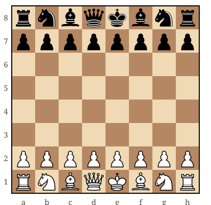
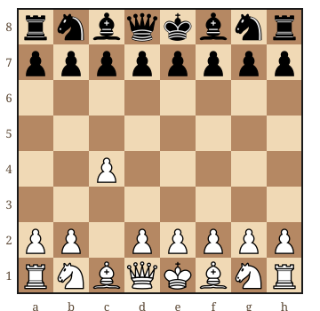
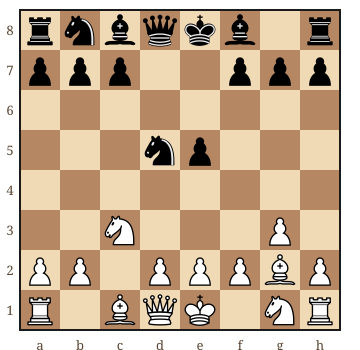
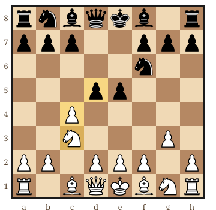
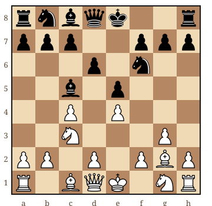
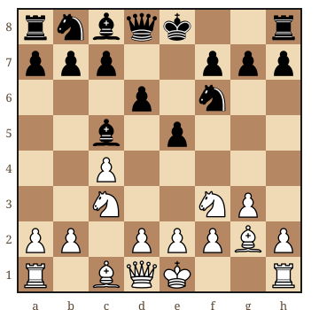
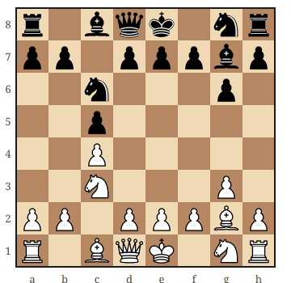
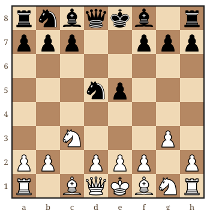
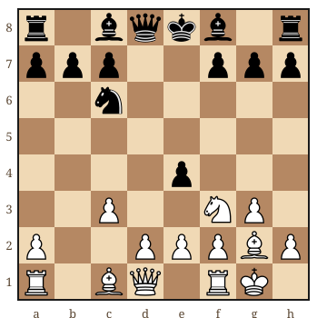
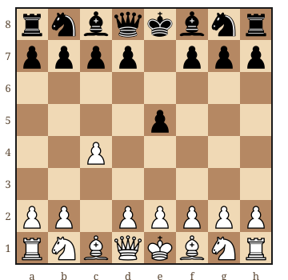

L’ouverture anglaise commence par 1. c4. Le pion blanc contrôle d5 depuis l’aile dame, sans occuper immédiatement e4 ou d4. Les Blancs peuvent ensuite développer leurs pièces selon la réponse noire. C’est une ouverture souple, qui peut rejoindre d’autres structures.
- Avec les Blancs
- 1. c4
- Repère ECO : A10
Contrôler une case ne signifie pas forcément y placer un pion. L’Anglaise permet de découvrir cette différence dès le premier coup. La première leçon sera donc de repérer d5, puis de choisir des cases de développement cohérentes avec les pions adverses.
Elle peut intéresser un débutant curieux des structures de pions. Ses nombreux changements de structure demandent toutefois de l’attention : si vous voulez une première expérience plus directe, l’Italienne reste un autre point de départ.
À retenir avant de jouer
- Votre objectif
- Contrôler d5 avec le pion c4 et développer les pièces selon le centre choisi par les Noirs.
- La décision au centre
- Préparer d4 ou garder une pression à distance ; le fianchetto ne remplace pas le calcul des échanges.
- Le point de vigilance
- Une poussée …e4 peut chasser le cavalier f3 : prévoir sa case de retrait.
Sommaire : choisir une partie du guide
Sur l’échiquier
Les premiers coups, un à un
Dans la notation française, C = cavalier, F = fou, D = dame et O-O = petit roque. T = tour et R = roi. Le signe x indique une capture, + un échec et # un mat. Les points de suspension indiquent un coup des Noirs.


Ce que chaque coup accomplit
- 1. c4
Le pion c4 contrôle d5. Les deux pions centraux blancs restent encore en d2 et e2 : vous gardez plusieurs choix de structure.
Votre fil conducteur
Trois idées à garder en tête
Observer d5
Le pion c4 attaque d5. Cela n’empêche pas les Noirs de lutter pour cette case, mais il faut en tenir compte dans les échanges centraux.
Développer en fonction de la structure
Cc3 renforce le contrôle de d5. Cf3 ou un fou en g2 sont d’autres idées possibles dans certaines positions, pas une liste à exécuter contre toute réponse.
Reconnaître un changement de famille
Si les pions d et c des deux camps avancent, une position issue de 1. c4 peut rejoindre un gambit dame ou une autre ouverture. Regardez les pions plutôt que le seul nom.
Un exemple court pour comprendre le plan

L’exemple montre la contestation de d5 : les Noirs y avancent un pion, les Blancs l’échangent puis développent leur fou en g2. Ce développement du fou sur une grande diagonale est appelé fianchetto. Les Noirs peuvent choisir une tout autre organisation.
Deux réponses noires à reconnaître
1…e5 : Occuper une case centrale
Les Noirs prennent de l’espace au centre. Les Blancs peuvent continuer à développer leurs pièces et surveiller la poussée …d5.
1…c5 : Une structure symétrique
Les deux pions c se trouvent avancés. Symétrique ne signifie pas sans décisions : les développements et les poussées d changeront les possibilités.
Ce sont des repères pour vous orienter. Vous n’avez pas besoin de mémoriser leurs ramifications pour commencer à jouer.
Comprendre ce qui se joue
Lire le centre et la structure de pions
Le pion c4 attaque b5 et d5. Il ne soutient ni e4 ni d4 depuis c4 : ce sont d’autres pions et pièces qui devront s’en charger si vous occupez ces cases. Le mot « contrôle » a donc un sens précis. Une case peut être attaquée sans être occupée, et le fait de contrôler d5 n’empêche pas les Noirs d’y avancer un pion si leur position le permet.
Après …e5, les Noirs prennent de l’espace et peuvent préparer …d5. Avec Cc3, les Blancs ajoutent un contrôle sur d5 ; avec g3 puis Fg2, ils peuvent placer leur fou sur une grande diagonale. Ces coups n’ont pas la même fonction : Cc3 agit immédiatement au centre, tandis que g3 prépare la sortie d’une pièce. Il faut compter le temps consacré à cette préparation.
Si les Noirs jouent …d5 et que vous répondez cxd5, le pion c quitte sa colonne. Une reprise noire par un cavalier place une pièce au centre et modifie les lignes. Le fou g2 pourra parfois viser le cavalier d5, à condition que la diagonale g2–f3–e4–d5 ne soit pas obstruée. Un pion blanc e4 ou un cavalier blanc f3 changerait ce trajet.
Quelles cases chercher pour vos pièces ?
Ces placements sont des repères à vérifier dans la position, pas des coups à jouer sans regarder l’adversaire.
- Cavalier b1c3
- Il contrôle d5 et e4. La case est disponible tant que le pion c ne l’occupe pas.
- Fou f1g2 dans un plan de fianchetto
- g3 prépare sa sortie. Regardez ensuite les obstacles sur la diagonale, plutôt que de supposer que le fou attaque tout ce qui se trouve loin devant lui.
- Cavalier g1f3 selon le centre
- Il développe l’aile roi et contrôle d4 et e5. Mais sa présence en f3 peut interrompre momentanément la diagonale du fou g2.
- Pions d et echoisir leur avance selon les réponses
- d4 peut rapprocher la partie d’une autre ouverture. e4 prend de l’espace mais change les cases et les diagonales disponibles.
- Roi et tourssécuriser le roi avant d’utiliser les colonnes
- Si le pion c est échangé, une tour pourra s’intéresser à cette colonne. Cela suppose un trajet libre et une cible pertinente.
Comment réagir aux idées adverses
Si les Noirs occupent e5
Ne cherchez pas à copier e4 uniquement pour obtenir une image symétrique. Demandez-vous comment ils préparent …d5 et quelles pièces vont contrôler cette case. Cc3 offre un développement compréhensible ; les autres choix de pions peuvent attendre que vous sachiez quelle structure vous voulez.
Si les Noirs répondent …c5
Les deux camps ont avancé leur pion c. La symétrie peut durer quelques coups ou disparaître après une poussée d. Le premier camp qui ouvre le centre doit avoir vérifié le développement, les reprises et la sécurité de son roi. Copier sans regarder ne garantit pas l’égalité.
Si les Noirs jouent …d5
Vérifiez les prises possibles sur d5 et les pièces qui peuvent reprendre. cxd5 peut permettre une reprise de cavalier ; développer ensuite Fg2 peut viser cette pièce si la diagonale est libre. Ce lien entre échange de pion et activité du fou est plus instructif qu’une mémorisation de noms de variantes.
Une décision concrète
L’échange en d5 prépare une diagonale, pas un gain automatique
Les Blancs ont joué Cc3 et g3. Les Noirs avancent leur pion d en d5, au contact du pion c4. Le fou blanc est encore en f1, mais sa future diagonale commence à prendre un sens.

Que produit la suite cxd5, …Cxd5 puis Fg2 ?
Repérez d’abord les menaces et les cases contrôlées, puis proposez une réponse.
Lire l’analyse de la position
4. cxd5 Cxd5 5. Fg2 échange le pion c blanc contre le pion d noir et développe le fou. Comme f3 et e4 sont libres, le fou g2 vise le cavalier d5. Les Noirs ont maintenant le trait : ils peuvent notamment échanger par …Cxc3, suivi de bxc3 dans cet exemple. La pression sur un cavalier ne prouve donc pas une pièce gagnée ; il faut examiner les réponses adverses et les reprises.
Comparer pour comprendre
Le fou g2 ne traverse pas vos propres pièces
Un fou placé sur la grande diagonale n’attaque pas automatiquement toutes ses cases. Le premier obstacle arrête son action, même si cet obstacle est une pièce blanche. Cette règle de déplacement devient une décision stratégique lorsque vous choisissez entre avancer un pion central et développer un cavalier.
Dans la position de départ, le fou g2 regarde vers f3, e4 et d5. Ces cases sont encore libres. Les deux choix suivants sont légaux et peuvent avoir un sens, mais ils interrompent tous deux la diagonale d’une manière différente. Le but n’est pas de condamner e4 ou Cf3 : c’est de voir ce qu’ils changent.
Position commune de départ :
1. c4 e5 2. Cc3 Cf6 3. g3 Fc5 4. Fg2 d6
Rejouez cette position, puis comparez les suites ci-dessous. Ce sont des exemples commentés : elles ne constituent pas deux recommandations équivalentes ni des coups à reproduire sans calculer.
e4 : gagner de l’espace et fermer momentanément la diagonale
5. e4

5. e4 place un pion au centre. Ce pion contrôle d5 et f5, et est défendu par le cavalier c3. En revanche, il bloque le trajet du fou g2 sur e4. Le fou ne contrôle donc plus directement d5 à travers ce pion.
Vous avez échangé une forme de contrôle contre une autre : un pion occupe e4 et contrôle des cases, tandis que le fou doit attendre une évolution de la structure pour retrouver sa grande diagonale. Pour juger le coup, examinez l’espace gagné, les possibilités de rupture et le développement restant.
Cf3 : développer une pièce en modifiant aussi les lignes
5. Cf3

5. Cf3 développe le cavalier et prépare le petit roque. Le cavalier contrôle notamment d4 et e5, mais il occupe f3, première case de la diagonale du fou g2. Là encore, le fou ne contrôle pas directement d5 tant que cet obstacle reste en place.
Ce placement peut être tout à fait cohérent. Une pièce peut développer ses propres menaces avant de libérer une diagonale. Ce qui serait faux, c’est de compter simultanément le cavalier f3 comme un défenseur actif et le fou g2 comme s’il traversait ce cavalier.
Vérifiez votre compréhension
Après e4, le fou g2 contrôle-t-il encore d5 ?
Non. Le pion blanc e4 bloque sa diagonale. Le pion e4 contrôle lui-même d5, ce qui constitue une autre forme de contrôle.
Après Cf3, quelle pièce empêche le fou de voir e4 et d5 ?
Le cavalier blanc f3. Un fou ne saute pas au-dessus des pièces de son camp.
Faut-il donc interdire e4 et Cf3 dans l’Anglaise ?
Non. Les deux coups peuvent poursuivre des objectifs cohérents. Il faut simplement identifier les changements de contrôle et prévoir la coordination des pièces.
À appliquer dans vos parties : À chaque coup central dans une Anglaise avec Fg2, tracez la diagonale et nommez son premier obstacle. Cet exercice vous aide à distinguer une pression actuelle d’un potentiel qui ne s’exprimera qu’après un échange ou un déplacement.
Reconnaître les embranchements
Deux variantes à comprendre pour commencer
Ces lignes courtes montrent ce qui change dans le centre et le développement. Rejouez les coups, puis formulez le plan avec vos propres mots ; les réponses adverses peuvent vous amener à une autre position.
L’Anglaise symétrique : deux pions c avancés
1. c4 c5 2. Cc3 Cc6 3. g3 g6 4. Fg2 Fg7

Les deux camps contestent le centre depuis l’aile dame et développent leur fou en fianchetto. La symétrie de départ ne signifie pas que l’on peut copier chaque coup sans risque : les Blancs ont le premier temps.
Le plan à comprendre : Préparez le développement du cavalier g1 et le roque, puis regardez si d4 est réalisable. La poussée d4 peut provoquer …cxd4 ; il faut déjà savoir avec quelle pièce reprendre et quelles lignes cet échange ouvrirait.
Le dispositif avec …e5 : une autre tension centrale
1. c4 e5 2. Cc3 Cf6 3. g3 d5 4. cxd5 Cxd5

Les Noirs occupent e5 puis avancent d5. Après l’échange cxd5 Cxd5, leur cavalier occupe le centre et les Blancs ont quitté la colonne c avec leur pion. Cette structure diffère immédiatement de la branche symétrique.
Le plan à comprendre : Le fou peut sortir en g2, mais le cavalier d5 peut échanger en c3. Comparez les structures après une éventuelle reprise bxc3 : les pions blancs ne forment plus le même dessin. Un fianchetto n’efface ni les captures centrales ni leurs conséquences.
Calculer avant de jouer
Piège et vigilance : Un pion qui avance attaque aussi une pièce

1. c4 e5 2. Cc3 Cf6 3. Cf3 Cc6 4. g3 d5 5. cxd5 Cxd5 6. Fg2 Cxc3 7. bxc3 e4 8. O-O
Avant de lire la suite, repérez les échecs, les captures et les pièces attaquées.
Voir la suite et le mécanisme
8… exf3
La poussée …e4 attaque le cavalier f3. En roquant sans le déplacer, les Blancs permettent …exf3 : le pion prend le cavalier. L’échange préalable en c3 a modifié la position, mais ne dispense pas de vérifier les attaques d’un pion sur les cases voisines.
Comment éviter le problème ou y répondre
Après …e4, le recul 8. Cg1 évite cette perte immédiate, même s’il coûte du temps. L’exemple n’en fait pas un plan idéal : il montre pourquoi il faut prévoir une case de retrait avant de laisser l’adversaire avancer sur son cavalier.
Suite de référence à rejouer depuis le début :
1. c4 e5 2. Cc3 Cf6 3. Cf3 Cc6 4. g3 d5 5. cxd5 Cxd5 6. Fg2 Cxc3 7. bxc3 e4 8. Cg1
Passer de l’ouverture au milieu de partie
Après le développement, regardez ce que deviennent d4, d5 et la grande diagonale du fou. Votre plan pourra changer si un pion occupe e4, si le cavalier se place en f3 ou si les Noirs ferment le centre. Une pièce active dans une structure peut devenir moins utile dans une autre : c’est une raison de relire la position après chaque échange.
Pour votre analyse, dessinez les diagonales du fou g2 avant et après les poussées centrales. Nommez le premier obstacle rencontré. Cet exercice simple vous évitera de compter une attaque qui n’existe pas encore.
Le nom et ses origines
D’où vient le nom « ouverture anglaise » ?
L’appellation anglaise est associée au maître anglais Howard Staunton, qui joua 1. c4 contre Pierre de Saint-Amant lors de leur match de 1843. Ce lien explique le nom géographique.
Staunton est une figure de sa diffusion, pas une raison d’affirmer que le coup c4 aurait été inventé ce jour-là. La réputation et la pratique de l’ouverture se sont développées bien après cet épisode.
L’Anglaise peut transposer : cela signifie que des ordres de coups différents aboutissent à une même position. Le nom initial ne décrit donc pas toujours toute la partie.
Les erreurs à éviter dans cette ouverture
Croire qu’un pion de côté ignore le centre
Le pion c4 agit sur d5. Tracez mentalement ses diagonales avant de juger son utilité.
Copier un placement contre toutes les réponses
Les réponses …e5 et …c5 ne construisent pas la même position. Un plan choisi sans regarder les pions adverses peut perdre son sens.
Multiplier les coups de pion
Même dans une ouverture souple, les pièces doivent sortir et le roi doit être protégé. Les coups g3 ou b3 ont un coût en temps.
À vous de jouer
Un exercice pour vérifier l’idée

Quel cavalier peut sortir pour renforcer le contrôle de d5 ?
Prenez quelques secondes pour choisir et expliquer votre coup.
Voir la réponse expliquée
2. Cc3 développe le cavalier b1 et ajoute un contrôle sur d5. Le pion c4 contrôle déjà cette case. Il s’agit d’un choix cohérent avec l’idée étudiée, pas d’un coup qui gagne de force.
Votre prochaine séance de pratique
- Placez seulement le pion c4 et nommez les deux cases qu’il attaque : b5 et d5.
- Rejouez la courte suite avec …d5 et observez la reprise du cavalier noir.
- Comparez les structures après 1…e5 et 1…c5 sans apprendre de variante.
Besoin de comprendre vos propres parties ? Les cours d’échecs permettent de travailler à partir de vos positions.
Quelles ouvertures comparer ensuite ?
- Gambit dame : comprendre 1. d4 d5 2. c4 simplement
Comparer la pression de c4 avec un centre blanc déjà occupé par d4.
- Système de Londres : le plan expliqué aux débutants
Comparer des choix de développement et de structure différents.
Retrouver les onze ouvertures et choisir votre prochaine fiche.
Questions fréquentes
Quel coup définit l’ouverture anglaise ?
Le premier coup blanc 1. c4 définit l’Anglaise. Ce pion contrôle d5, tout en laissant les pions d et e sur leurs cases initiales.
Pourquoi l’appelle-t-on anglaise ?
Le nom est associé à Howard Staunton, maître anglais qui employa 1. c4 dans son match de 1843 contre Pierre de Saint-Amant.
Qu’est-ce qu’une transposition ?
C’est l’obtention d’une même position par des ordres de coups différents. Une partie commencée par l’Anglaise peut ainsi rejoindre une autre famille d’ouvertures.